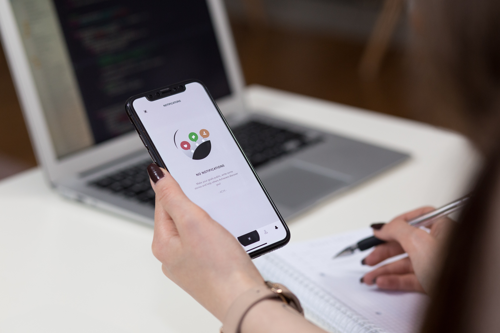
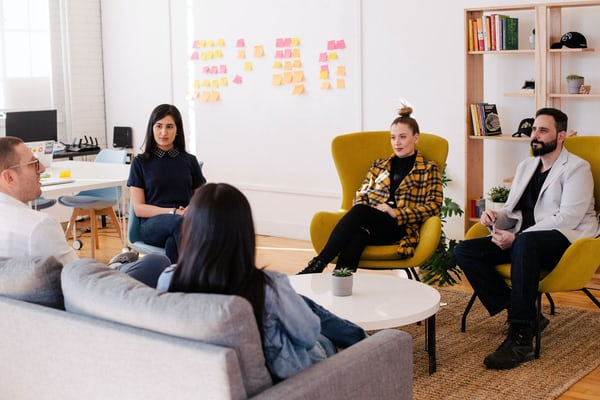

As a group we decided on the name “Team Troubleshoot”. We thought it was a memorable name and the term troubleshoot is one that is relatable to IT.
Bryce Allen (Student Number: s3501413)
My name’s Bryce Allen, and I am currently undertaking RMIT’s Bachelor of I.T. I am a proud member of Team Troubleshoot for the purpose of this assignment. I have moved back and forth between Ballarat and Melbourne the last few years and have finally settled down back in Ballarat where I was born. I currently work for a small company building high-end custom PCs for both personal and commercial use. My role is assembling, testing, and troubleshooting our products. I have always had a passion for the hardware side of computing and hoping to expand my knowledge into the software side of things. When I am not working or tinkering, I play in a few bands locally and have a passion for audio engineering and sound production; I am most often found in my sketchy home studio amongst a tangle of cables and gear.
Geoffrey Boyle (Student Number: s3871416)
My name is Geoffrey Boyle and I am currently studying the Bachelor of Information Technology at RMIT University, I am a member of Team Troubleshoot for our assessment tasks. I am currently 43 years of age and was born in Brisbane, Australia. My current employer is Australia Post, for the past 13 years as a Postal Delivery Officer. My interests and hobbies consist of travelling, playing rugby league, watching movies, fishing, and working with computers. My interest in IT started back at high school, there are many different areas that I enjoy. For that reason, the current field that I would like to pursue is still currently undecided. Ideally to become multi-skilled with Networking, Web Development, and some Programming would be my dream. With the variety of subjects on offer from RMIT University, it will expand my knowledge and through study, I will find the career pathway that I will pursue in the future. My current experience in IT relates to building computers, upgrading, diagnosing problems and repairs. After completing high school in 1995, I had continued further study in Web Development, however I need to retrain my skills in this field.
Mitchell Cash (Student Number: s3740076)
My name is Mitchell and I am a member of Team Troubleshoot. I am studying a Bachelor of Information Technology at RMIT University and have a strong passion for technology and software development. I grew up in Queensland, Australia and began my degree there while I was working as a Business Analyst at a technology company in Brisbane City. Since then I have moved to Scotland, UK and studying remotely from there while also working as a software engineer. I have been working as a software developer for 1-2 years now and am focused on frontend development using Vue.js, but also work on some backend systems in PHP. Currently some of my favourite tech I am playing with is Vue.js (with a close eye on the upcoming v3 release), DevOps CI/CD, serverless development and containerization (Docker and Kubernetes). If I am not playing around with tech I play (well played thanks to the pandemic) a lot of social sport, including AFL, touch football and indoor soccer.
Emre Sezgin (Student Number: S3875131)
My name is Emre Sezgin. I was born in Melbourne, Victoria and now I reside in Brisbane, Queensland. I am a member of team troubleshoot. I am undertaking a bachelor of IT and my most up to date education is high school. Even though I grew up in Melbourne my nationality is Turkish/Australian, which means I also know Turkish as well and a little bit of Arabic. I work in aviation as ground operations officer at Brisbane airport (BNE). An interesting fact about me is that even though I love Holdens very much and own one myself, I was awfully close to buying a Ford and ruining my loyalty to Holden, sadly I am also devastated that the great lion will not be with us any longer. Some hobbies of mine are tennis, video games but mostly working on my car. Fixing it myself and learning new stuff while at it. The most recent modification I have done to it was installing a remote start module which allows it to start with the key, while pressing the lock button 3 times without the key even being inside the car.
Aidian Withers (Student Number: s3874333)
My name is Aidian and I am a member of Team Troubleshoot. I was born in Brisbane Queensland and moved down to Burnie Tasmania at an early age, after year 12 I moved down to Launceston to further my career and study but ended up getting a trainee IT position at the Department of Education. I am hoping to acquire a permanent position before my Trainee role ends. I Completed Year 12 and 2 Units at Utas University for my Batchelor’s of Information Communications and Technology’s. I am currently studying through Open University with RMIT to complete the rest of my Batchelor’s. I have always had interest in IT technology’s which got me wanting to be a part of the IT industry. My main area of interest is networking as the idea of making systems communicate over large distances fascinates me. I have had 5 months experience within an IT role and may years of little troubleshooting jobs throughout the family. My hobbies include Gaming, VR, building computers and watching online videos.
Team Troubleshoot worked well together as a group by setting our targets and achieving our goals before every meeting. The meetings were conducted twice per week at a time that was suitable and agreed upon for all members to attend. There were a few minor things that we could have improved within the group, some of these improvements relate to planning and organization. We will be taking what we have learnt from assignment 2 and improving our processes for assignment 3. We have already started our improvements by starting early, setting a plan from the beginning, and ensuring we are spreading the work.
| Name | Ideal JOBS |
|---|---|
| Bryce Allen | Senior Cyber Security Analyst | Geoffrey Boyle | IT Engineer for MSP (Managed Service Provider) | Mitchell Cash | Software Engineer (Frontend and Backend) – Team Leader | Emre Sezgin | IT Technical officer | Aidian Withers | Network Engineer | Samuel Fairbrother | Test/Systems Analyst |
Common Elements
Soft skills are some of the most important skills to have within the IT Industry, Skills like teamwork, communication, analytical thinking are all common skills required for our Ideal jobs. These soft skills are needed to ensure you can cooperate, communicate, and contribute to the team environment. Technical skills like Basic technical support, Networking knowledge and Security Awareness are required within all specialized IT roles, knowledge of computer systems, the importance of security and troubleshooting steps allows this specialized employee to have a wide understanding of the systems they work with making them more efficient and effective within their specialized fields.
Different Elements
Specialized skills are the main factor that differentiates each of our roles, daily tasks, and responsibilities. Specialized areas are different for each position you strive for. This can be seen in our group as all 6 of us have unique pathways we can take to achieve our goals. Mitchell to become a software engineer will have to study and specialize in programming. Where Aidian who wants to become a Network engineer will need to study and specialize in Networking achieving standards and certificates to ensure he is qualified. Bryce will need to study Cyber Security to ensure he has the skills to become a Security Analyst. The pathway taken depends on the specialization chosen.
Similarity
Each of our positions all have the similarity of the team environment, we will all be working within a team to meet some goal. We will all need excellent communication skills to be able to do our role effectively and we will all need to constantly update ourselves with knowledge of new technology's, updates, and changes to ensure we can work efficiently. Although we will have this similarity our day-to-day work will be different Mitchells position as a Software Engineer means he will be spending most of his days programming, testing, and planning the creation/ updating and maintaining of software. This position allows for him to have the opportunity to work from offsite location as he is not tied to completing onsite tasks. When Mitchells position is compared to Emre’s we can see where these differences come from. Emre’s position is an IT Technical Officer, this position entails giving support to his clients, maintaining and upgrading current systems and providing technical support if something goes wrong. This position is mainly onsite whether it is in the office preparing for calls or to their location to assess any issues. These differences can be shown for all our positions as our specialized areas all have different requirements, needs and skills.
Team Troubleshoot’s project idea is an inventory app we are calling Troubleshooter. Troubleshooter allows home users to take and store inventory of their home assets. The Troubleshooter app will assist in tasks such as insurance claims, warranty claim and tax claims. Troubleshooter will allow for the home user to store information needed about their assets like cost, Description of item, model, Serial Numbers, Date of purchase, Scan or upload photos or receipts. Troubleshooter will also be able to assist in the recording process with features like image scanning technologies to gather information from the receipts, Online databases that can search for additional information about your product, example images from the internet of your product, and all your data can be easily exportable into different formats straight from the app. All your data will be stored in a secure cloud-based server behind a secure two factor authentication.
Troubleshooter is designed all around the user experience. As Troubleshooter is aimed at the home audience our app will have a sleek and uncomplicated design to it. You will easily be able to login, create an asset, edit assets, or remove assets when needed. With a simple searchable list with images of your item displayed it will make finding what you need easy. The asset creation will be easy on the user with features like scanning from the receipt and searching for addition information and images from the internet you will not even need to type in any information. Our goal is to have an easy to use, effortless app that any home user can use.
The motivation for this project is around Internet of thing, Smart automation to make people's lives easier. The task of asset management is not something people want to be doing, this mindset leads people into situations where they need to submit a tax claim or insurance claim but do not have any of the information needed. This projects aim is to create an app that is easy to use, automates as much of the process as possible and keeps all the data safe. To incorporate these features, we will need to grasp knowledge in Optical character recognition (OCR), Image recognition, cloud databases and two factor authentications. These subjects are complex and require a lot of self-learning and training to pull off showing dedication and passion towards the outcome.
There are currently plenty of asset management software's out there including nest egg, MyStuff and Sortly, apps like these are our main competitors, these apps are packed full of features advanced options and functions that the average user would be confused about making starting out more confusing than it needs to be. The Troubleshooter app will combat this with an easy to use, uncomplicated design based for the home user, we will implement functions such as scanning from a receipt, gathering information and images from the web all to make the user experience more enjoyable.
Team Troubleshoot’s aim is to create a User-friendly app to record and keep track of assets. This app will be aimed at the home user to keep track of assets for insurance and tax claim purposes. Our app needs to have a clean modern design, functionality that is easy to follow for all users, Safe and secure data storage, Photo Scanning technology and a promotional video to show off all the features.
The justification for this application is that there is only a small range of home inventory applications that give the freedom to store what you want and need. Our app will allow the user to add their own fields, Scan in photos, receipts, products from the internet. Our app will make sure the most information is recorded and available for the user as soon as they need it. All this information will improve tax returns and keep insurance claims delay free.
To achieve this larger goal, we will need to complete smaller tasks within the application, first goal would be to complete research of android app development and the possibility of using MIT Inventor to create the prototype. Research is essential when starting something new so looking at the skills we have and the tools we can use will be vital to starting this project. As we all have different coding knowledge, we think that using MIT Inventor to create the prototype would be a beneficial call as block-based coding is easier and faster to research and learn.
The most important goal is to create the back end or functionality of the application. This backend will handle all the user interactions, Passing Data, displaying the visuals correctly and allowing for the user to access and interact with the application. By completing the functionality of the application early on it allows for further testing, risk assessment and designing to take place all impacting the quality, efficiency, and usability of the application.
Data storage and security is a great concern for our team, one of our essential goals are to ensure all data is stored appropriately and secure. Storing data securely is extremely important to protect our data we record for the user. This data has sensitive financial information which should not be seen by unauthorized personnel, with storing this data in the cloud it brings both opportunity for security as well as risk that we will need to discover.
Team Troubleshoots app needs to have a clean, modern, and function design not only functionally but visually. We need to create high quality visual elements and style for our app. This design will ensure the app is professional, easy to understand, visually appealing and easy to use.
The scanning feature is a unique feature that will separate our app from the competitors, this feature will allow you to scan in receipts to import information and allow the user to take a picture of the product and the app will find as much more relevant information using the name, image recognition and any other information given. This allows you to add more information about your asset without having to do research or investigating. This feature gives the user more of a premium experience making the asset recording process easier.
Creating a promotional video will help to bring awareness of the project. This promotional video is aimed to get home users to download the app and try the service we are providing. This promotional video needs to be professional, short sharp and straight to the point to keep the audience's attention. We will include subjects like the description of the app, security, and statistics.
TODO
TODO
Team Troubleshoot’s scope if this project is to deliver a working visual representation of what the app will look like and how it will function. With our limited time we will not be able to implement all the features we have planned, instead we will focus on the basic functionality of the app such as Loging in, Listing, adding and deleting assets, Basic cloud storage, uploading images, easy to follow user interface and the ability to exporting your data. We are also researching into getting the basic functionality of an OCR to enable to app to read in information from an image of a receipt, we wish to implement this feature in full but due to time limitations we may only be able to implement partial/basics of this feature.
Due to time limits we are unable to implement all the features we wish to. Some features like collecting images from the web using input data, scanning a picture of the device to allow for the app to gather information for you and the ability to create your own fields within the list where cut out of the scope as the team have seen this impractical to implement due to our limited knowledge, time restrains.
The Troubleshooter app and project makes use of a range of different tools and technologies to create the final production, as well as the marketing video. When we conducted our initial review into building Troubleshooter we went around the team to understand what background we had in app development, whether that be web, iOS, Android or other. While there was some basic knowledge of iOS development from Mitchell and Android (Java) development from Aidian it was not our speciality. Web development was our strongest skill with all members being able to get involved in some way, but Troubleshooter was designed to be an app you can run from your phone because portability and the use of the camera are some of the foundations of the feature set. This led us to further explore options and we came upon a tool called MIT App Inventor.
MIT App Inventor is a web app that provides an easy to use interface to get up and running with a phone application very quickly and without a deep understanding of all the iOS and Android frameworks. MIT App Inventor has been used to create apps such as COVID-19 data tracker, bipolar management and scheduling app and apps to help manage share houses. As none of the team had experience with this tool, we made some example “dummy apps” and quickly realised it would meet the requirements for our first version and prototype of the Troubleshooter smart phone application.
As MIT App Inventor would cover off everything we needed to build the app (including camera and data storage support), we could focus on what we needed to create the marketing video for the Troubleshooter app. After another check of the team’s background in storyboarding and video editing, we had enough knowledge to get us across the line without too much additional learning. We again reviewed the tools and technologies that are available to us and had to cross of a handful of them due to the price tag (e.g. Adobe Premiere). We decided that we would use iMovie (free) for our video editing app and Microsoft PowerPoint as our app for the storyboard. The whole team had experience with PowerPoint and once we set out the storyboard template, we could all get involved and Aidian and Mitchell both had a small background in basic video editing (albeit with Adobe Premiere) and offered to assist with any of the video editing.
Outside of the direct technologies required for the Troubleshooter app itself the team always relies heavily on the Microsoft Office suite of products and use Microsoft Teams as our communication platform as well as Microsoft Word and Notes to consolidate our ideas and report writing.
An important part of designing the application is the testing phase, a plan needs to be put in place to ensure everything is working throughout the application. There are many areas that need to be considered when testing the design of our new application “Troubleshooter”. The following areas are User Interface testing, Functional Testing, Database Testing, Load Testing, Performance, Security Testing, etc.
User Interface testing is required to ensure that the interface will meet user expectations. The following areas need to be tested throughout the process.
Functional testing is also required to test each function of Troubleshooter’s software application, by providing appropriate input and verifying the output against the Functional requirements. The following areas need to be addressed in this testing phase.
Database testing was also required. This involves performing data validity, data integrity testing, performance check related to database and testing of procedures, triggers, and functions in the database. From database testing point of view, the following checks should be performed −
Load testing one among the various kinds of performance testing, this is required to determine the performance of the application in real time load conditions. It is used to ensure that the application performs satisfactorily when many users try to access or use it at the same time.
Performance Testing was used for testing the speed, response time, stability, reliability, scalability, and resource usage of a software application under a particular workload. The focus of Performance Testing was to ensure the application’s
Security testing is another important aspect of the application.
There are four focus areas to be considered in security testing of the application.
Network security: This involves looking for vulnerabilities in the network infrastructure (resources and
policies).
System software security: This involves assessing weaknesses in the various software (operating system,
database system, and other software) the application depends on.
Client-side application security: This deals with ensuring that the client (browser or any such tool)
cannot be manipulated.
Server-side application security: This involves making sure that the server code and its technologies are
robust enough to fend off any intrusion.
To summarise the testing phase, there are many areas that need to be covered to optimize the performance of the application. Ideally 6 test users with skills in the specific areas above would be required to focus on each area of the testing phase, however less test users would be required depending on their skillset. All hardware devices need to be tested such as photo scanning technology devices, storage, computer, and hand-held devices to be compatible with the software used for the application across multiple platforms.
TODO
Our team's "Troubleshoot" app faces several risks that will present themselves both during development and well into our hypothetical launch. Outside of the generic risks associated with any I.T. project, developing and Android app has its own unique set of risks.
Specific to our own group, and the nature of this assignment, inexperience is a very real risk to our project: having never developed an Android app before, there is the risk that we may not be able to learn, understand and implement advanced techniques (such as OCR) in a reasonable timeframe. Inexperience is a unique risk to our project in that the only way to overcome it is to either spend increasing amounts of time to become experienced, or to add a member to the team that possesses the relevant experience, much like a company would.
Another risk is that of being tied to one platform. Being an Android app, how many potential users are we missing out on? The need to translate the app to accommodate the iOS platform down the line may exist, in order to deliver a comprehensive product.
Tying into the previous risk, there is the possibility of the application being denied by the relevant app store. App store/marketplace rules are always subject to change, and there is no guarantee that even a successful implementation of the "Troubleshoot" app will be approved for sale.
There is also always the risk that the "Troubleshoot" app won't meet the end users' needs. The app may not have the desired features implemented in the way our intended users really need. Conversely, our app could potentially have too many features, leaving the end user with difficulty in getting what they need from out app. Our solution will need to be user-friendly and concise in what it has to offer, with a well-tailored UI that communicates a wealth of features in a simple manner.
 The members in our team communicate by having meetings twice per week and sending messages through chat using MS Teams. Every meeting, the group discuss the tasks that need to be complete and set goals to have some of these completed by the next meeting.
We also discuss the current progress of our assignment, ideas for our website and how to achieve the results required for our project idea. In the meeting agenda notes, we have a progress and things to do list. This list allows each of the team members to view our current progress, tasks that each team member are currently working on, and tasks that are still outstanding.
If a team member is not present at the meeting, a message is sent through chat on MS Teams, to advise what was discussed at the meeting and tasks that are required to be complete. The team member absent is then required to select an incomplete task from the list. If a group member fails to respond, the rest of team work together to take on the additional tasks that have not been completed.
Troubleshooter’s engineering and product development centre are looking for a passionate application developer for one of our newest projects. Our Software Engineer will work as part of a technical team responsible for the design, development, testing and integration of new communications, software, infrastructure and applications, including the development of Android and IOS apps, to meet product and business requirements.
We are looking for someone with the following experience, knowledge and skills:
Your Troubleshooter benefits include:
Sounds like a job you were born to do? We want to hear from you and can't wait to receive your application!
Troubleshooter’s Project manager need to be a passionate leader looking for a new, innovative project to lead. Our Project Manager will lead our software, design, and marketing team to ensure quality, communication, and transparency between the team. The Project Manager will oversee regular communications, learning for team members, Quality assurance, Team Meetings, meeting goals and to take responsibility for the team and the product.
Your profile:
Technical Skills:
Your Troubleshooter benefits include:
We are seeking a senior marketing and sales director to lead and define Troubleshooter’s go to market strategy.
The type of person we are looking for is someone with lots of enthusiasm and very autonomous as you will be joining a small team and will be required to define how and where Troubleshooter fits in the market and the message we send out to customers. On top of the marketing strategy any new inbound leads are to be assessed and actioned. We are a small team now but would envision you leading and hiring for the future marketing/sales team as we grow. We look forward to receiving your application!
Your profile:
Technical skills:
For the right candidate Troubleshooter offers a competitive salary, monthly team outings and annual learning and development budgets.
Bryce Allen (Student Number: s3501413)
TO DO
Geoffrey Boyle (Student Number: s3871416)
TO DO
Mitchell Cash (Student Number: s3740076)
TO DO
Emre Sezgin (Student Number: s3875131)
TO DO
Aidian Withers (Student Number: s3874333)
In my opinion Team Troubleshoot has continued to work extremely well as a team. We’ve had meetings twice a week to discuss ideas, problems, create plans and actions for the future as well as constant communication within our chats. We were not afraid to present problems or ideas, and all contributed towards our project. Sadly, Samuel did not contribute towards the project, we tried several communication attempts - assigning him tasks and inviting him to meetings, but he did not respond. Bryce however strived for greater marks and has become more active within our group, striving to get more tasks completed and stronger communication with us all which was fantastic to see.
As reflected from our previous assignment we strived to be more prepared in our meetings and our project. We all worked together as a team to construct what we should have completed before the next meeting and all contributed in a meaningful way. If there was anything I would improve upon, it would be the platform we created our app on. If we had a longer period, we would be able to learn and implement a more complex and powerful platform. Team Troubleshoot continues to work and took each other's feedback, communicated effectively and worked hard on the product. I have learned more about teamwork, meeting organisation, and the way people work within the IT industry. Our GitHub activity shows that we have all been contributing work towards the website; once we have finished a part of our work, Bryce as he has a more advance grasp on English volunteered to go over our work to spell and grammar check before we submit to our site. We make sure we have all checked over it then we upload it to our page with each person being responsible to upload their own sections. I am amazed at what we could create in such a small time and am glad to have the pleasure to work within this Team Troubleshoot.
Group Reflection
TO DO